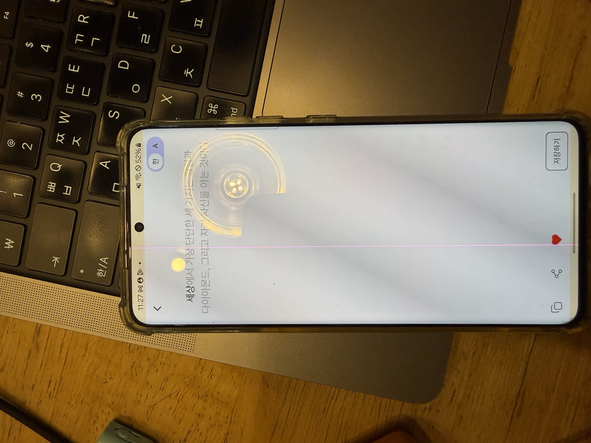
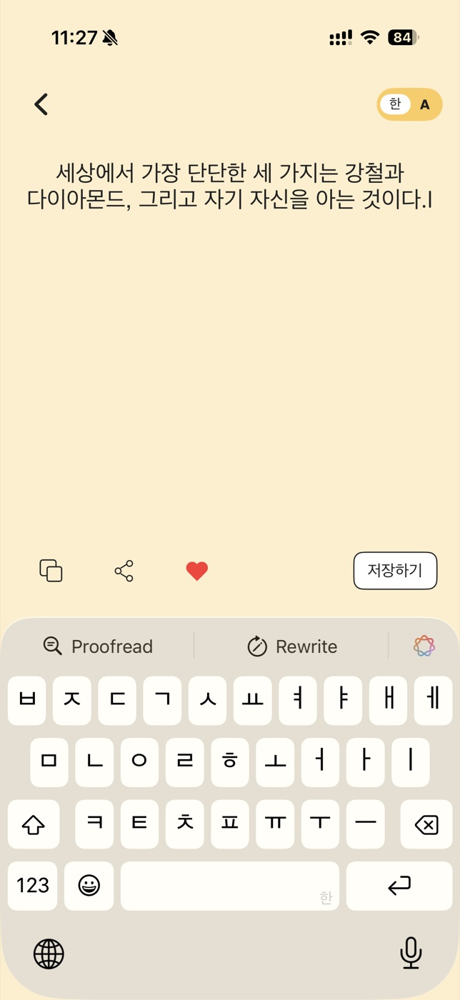
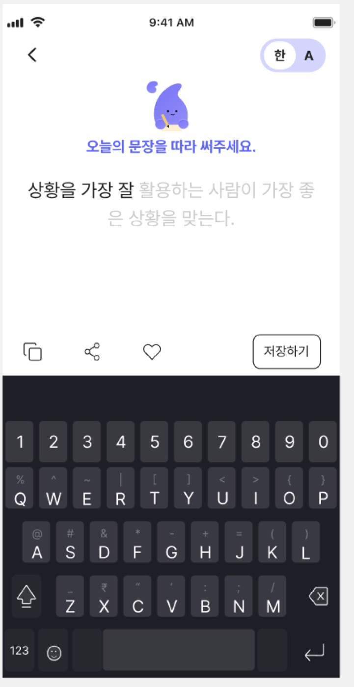
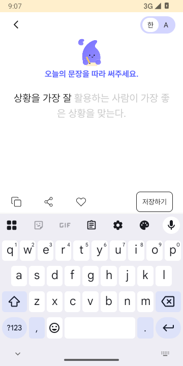

필사 작성 화면 > 캐릭터 미적용
Notion 원본 이슈
상태 In progress · 우선순위 낮음 · 기기 Android, iOS · 화면 필사 작성 화면 · 담당 보훈 강
아래는 Notion에서 조회한 본문 순서와 문구를 보존한 텍스트다. 만료되는 첨부 URL만 보존된 로컬 이미지 표시로 치환했다.
원본 본문 전문 펼치기
<columns> <column ratio="50"> \[AS-IS\] - AOS [Notion 원본 첨부 1 — 아래 보존 이미지 참조] - iOS [Notion 원본 첨부 2 — 아래 보존 이미지 참조] </column> <column ratio="50"> \[TO-BE\] - 상단 캐릭터 + ‘오늘의 문장을 따라 써주세요.’ [Notion 원본 첨부 3 — 아래 보존 이미지 참조] <empty-block/> </column> </columns> ## iOS 원인 분석 및 해결 계획 · 2026-10-25 분석일: 2026-10-25 (KST) \| 대상: iOS \| 코드 기준: Fiilsa 현재 checkout, HEAD 790e92a.<br>이번 기록은 원인 분석·해결 계획이다. 앱 코드는 수정하지 않았고 시뮬레이터/실기기·실서버 테스트도 실행하지 않았다. 코드로 확인된 사실과 런타임 확인이 필요한 추론을 구분했다. TCA의 State/Action/Reducer는 Android MVI의 화면 상태/이벤트/ViewModel 처리에 대응하며, View는 Jetpack Compose처럼 상태를 받아 화면을 그리는 부분이다. ### 원인과 근거 확인: TypingQuoteView.swift:21–45의 구성은 상단 뒤로가기/언어 전환 → TypingQuoteBodySection → Spacer → 하단 액션이다. topSection(:58–76)에도 캐릭터나 '오늘의 문장을 따라 써주세요.' 문구가 없다. TypingQuoteBodySection은 명언과 입력/커서만 그린다. 자산을 읽지 못한 문제가 아니라 해당 안내 영역이 화면 구성에 빠져 있다.<br>현재 2_home.md 타이핑 기획의 상단 설명에도 이 안내 영역이 명시되지 않아 화면 계획 보완이 필요하다. ### 해결 방안 최신 Figma의 해당 캐릭터·안내 문구 영역을 확인하고 원본 자산/색상 모드/위치를 화면 문서에 기록한다. TypingQuoteView의 해당 위치에 작은 안내 영역을 추가하거나 기존에 같은 Figma 컴포넌트가 있으면 재사용한다. 정적인 표시이므로 불필요한 TCA 상태나 별도 도메인 기능은 만들지 않는다. 입력창 포커스·한글 조합·언어 전환·저장 흐름을 보존한다. ### 영향 범위와 검증 계획 TypingQuoteView, 필요한 Bundle Assets, docs/screens/2_home.md의 타이핑 컴포넌트 목록 및 QA 기록. HomeUITests의 타이핑 fixture와 GlobalLoadingUITests의 키보드 시나리오를 활용해 Light/Dark, 키보드 노출, 작은 화면, 긴 명언, 글자 크기 확대 상태에서 안내와 저장 버튼 가림을 확인한다. ### Figma 기준 및 확인 사항 타이핑 Light https://www.figma.com/design/VdFocqyqTgevMVCQxwAQ2X?node-id=2929-17920, Dark https://www.figma.com/design/VdFocqyqTgevMVCQxwAQ2X?node-id=3087-28815. 기존 기준 이미지 docs/design-qa/assets/home-figma/2026-09-20-typing-light-2929-17920.png. 현재 Figma에 QA의 안내 영역이 반영되어 있는지 하위 레이어를 다시 확인한다. Android 캡처/자산은 iOS UI 기준으로 사용하지 않는다. ### 미검증 사항과 주의점 이 티켓은 Android/iOS 공통이지만 이번 분석 및 후속 작업 범위는 iOS다. 이번 상태 변경은 티켓 전체의 In progress이며 Android 해결·최종 완료를 의미하지 않는다. 실제 키보드/레이아웃 검증은 미실시. 구현 시작 전 화면별 기획에 Figma URL·프레임·컴포넌트·상태·QA 기록 링크를 확정한다. Figma 원본 전체 프레임을 확보하고 컴포넌트부터 수정한 뒤 조립 화면을 대조한다. docs/ui-redesign-workflow.md의 최대 5회 검증을 따르며 실제 캡처 대조 전에는 완료/Pass로 바꾸지 않는다. ## iOS 구현 진행 및 검증 · 2026-10-25 iOS TypingQuoteView에 Figma Light/Dark 원본 60pt 캐릭터와 ‘오늘의 문장을 따라 써주세요.’를 추가했다. Light 배경을 대상 Figma의 흰색으로 맞췄다. 입력 조합 처리 UIViewRepresentable은 유지한다. 필사 화면 진입·안내문구 UI 테스트 통과. 한글 키보드가 열린 전체 화면에서 캐릭터·안내·저장 버튼이 보이는 캡처 확보. Android 구현은 이번 작업 범위가 아니다. 공통 검증: iPhone 17e iOS 26.4.1에서 자동 테스트 140건 통과. QA 기록: docs/design-qa/2026-10-25-ios-qa.md. Figma 360pt와 런타임 390pt 및 기존 폰트/레이아웃 차이로 전체 화면 최종 수용은 Blocked이며, 티켓 상태는 In progress를 유지한다. 저장 팝업은 별도로 정책 확인 대기. ## iOS 구현 결과 정리 · 2026-10-25 iOS TypingQuoteView에 Figma Light/Dark 원본 60pt 캐릭터와 ‘오늘의 문장을 따라 써주세요.’를 추가했다. Light 배경을 대상 Figma의 흰색으로 맞췄다. 입력 조합 처리 UIViewRepresentable은 유지한다.<br>검증: 필사 화면 진입·안내문구 UI 테스트 통과. 한글 키보드가 열린 전체 화면에서 캐릭터·안내·저장 버튼이 보이는 캡처 확보. Android 구현은 이번 작업 범위가 아니다. 전체 단위·저장 팝업 UI 회귀: 142건 통과, 실패·skip 0 (Fiilsa-popup-final.xcresult). QA 원문·첨부·원인·수정·검증 결과를 docs/design-qa/2026-10-25-ios-qa-report.html에 정리한다. 시각 검증은 360/390pt 프레임·미등록 폰트·기존 배경 레이아웃 차이로 Blocked. 실계정 OAuth·실서버 v2·이미지 업로드/삭제는 미검증. 상태는 In progress 유지하며 UI 최종 완료를 의미하지 않는다. ## Android 원인 분석 및 해결 계획 · 2026-10-25 상태: Android 원인 분석·해결 방안 문서화 완료. 앱 수정·수정 후 검증 미실시. 이 페이지의 기존 iOS 구현 결과와 별도이며, 공통 티켓 전체 완료를 뜻하지 않습니다. 소스 stage HEAD 4934a13 + 기존 로컬 변경. 기존 설치 Android 1.0.31 (25), emulator-5554, API 35, 360×720px/160dpi에서 안내 누락을 확인했습니다. 설치 APK와 미커밋 소스의 동일성은 미확인입니다. 원인: TypingQuoteView.kt:177–212는 TopSection → top padding 28dp → BodySection으로 조립합니다. TopSection은 뒤로가기/언어 전환만, TypingQuoteBodySection은 명언/입력/커서만 표시합니다. 캐릭터 이미지 로딩 실패가 아니라 캐릭터·안내 문구를 그리는 영역 자체가 없습니다. 저장 결과 팝업의 별도 캐릭터는 입력 화면에 연결되지 않았습니다. Figma 직접 확인: Light https://www.figma.com/design/VdFocqyqTgevMVCQxwAQ2X?node-id=2929-17920 / Dark https://www.figma.com/design/VdFocqyqTgevMVCQxwAQ2X?node-id=3087-28815. 안내 그룹 Light 3087:28754 / Dark 3087:28984. Handwriting 캐릭터 60×60(3087:28737 / 3087:28985), ‘오늘의 문장을 따라 써주세요.’ Pretendard Bold 16/24, #5C65FF(3087:28753 / 3087:29001). 전체 360×720, 안내·본문 컨테이너 x20/y80/폭320, 안내 이후 본문 간격20. 해결 계획: 안내만 담당하는 작은 Compose 컴포넌트를 추가하고 TopSection과 BodySection 사이에 조립합니다. Figma 원본 자산을 사용하며 기존 팝업 자산 재사용은 동일성 확인 후 결정합니다. 현재 28dp 여백을 함께 조정해 Figma 위치를 맞춥니다. 정적 표시이므로 새 API·Repository·저장 상태는 필요하지 않습니다. BasicTextField 한글 조합/포커스/커서와 저장 계약은 유지합니다. 검증 계획: 안내 컴포넌트 Light/Dark Preview → 안내+본문 Preview → 360×720 실제 전체 화면 IME 열림/닫힘 비교. 한/영 전환·긴 문장·글자 크기 확대·한글 조합·저장 성공/실패/미완료·Home 복귀를 회귀 확인합니다. 영역 부족으로 Figma에 없는 스크롤/축소가 필요해지는 경우 제품 결정을 확인합니다. 이번에는 새 자동 테스트·Preview 렌더를 실행하지 않았고 증상 재현 캡처만 확보했습니다. 보고서: docs/design-qa/2026-10-25-android-new-qa-report.html#typing. QA 접수 원문과 AOS/iOS/TO-BE 첨부를 보존하고 Android 코드 근거·Figma 원본·재현 캡처·수정 계획을 포함했습니다. 근거 폴더: docs/design-qa/artifacts/2026-10-25-android-new-qa/. 현재 실제 해결 기록은 분석과 계획 수립이며 앱 구현 완료가 아닙니다. ### 제공 페이지 추가 조사 · 2026-10-25 사용자 제공 ‘v. 3.0’ 페이지(2438:3437)의 필사 Light2438:12875 / Dark2438:10034를 캡처했으며 캐릭터와 안내 문구가 없습니다. QA 원문에 대응하는 ‘리뉴얼 ver.1.0’의 기존 기준 2929:17920 / 3087:28815를 유지하고 버전 차이를 보고서에 기록했습니다. 안내 그룹 Light3087:28754 / Dark3087:28984에서 원본 SVG를 추출했습니다. 두 SVG는 width60/height60/viewBox0 0 60 60이고 SHA-256이 동일하여 단일 원본 재사용 가능합니다. 문구 ‘오늘의 문장을 따라 써주세요.’는 Pretendard Bold16/24, #5C65FF, 안내 그룹296×84, 안내 다음 본문 간격20입니다. 자산 및 조사 JSON: docs/design-qa/artifacts/2026-10-25-android-new-qa/. 보고서: docs/design-qa/2026-10-25-android-new-qa-report.html#figma-extraction. 이번에는 자산 추출·문서화까지 했으며 앱 연결·수정 후 검증은 미실시입니다.
원본 첨부 1 · AOS AS-IS

원본 첨부 2 · iOS AS-IS

원본 첨부 3 · TO-BE 시안

Notion 댓글
문제와 재현 조건
Android 필사 입력 화면에서 상단 뒤로가기/언어 선택 아래 캐릭터와 ‘오늘의 문장을 따라 써주세요.’가 나타나야 한다. 기존 수정 전 앱에서는 누락됐고, 현재 소스의 Light/Dark 고정 Preview와 이번 새 런타임에서는 표시된다.
이슈 원인
기존 원인 분석에서 TypingQuoteView가 상단과 입력 본문을 바로 조립한 것을 확인했다. 자산 로드 실패가 아니라 안내 컴포넌트 누락이었다. 현재 코드에는 별도 TypingQuoteGuide가 조립되어 있다.
해결방법과 실제 수정
2026-10-25 승인 범위에서 TypingQuoteGuide.kt, TypingQuoteView.kt, TypingQuoteBodySection.kt, typing_handwriting.png, strings.xml을 수정했다(커밋 3b3e664). 캐릭터 60×60, Bold 16/24 문구 #5C65FF, 안내 뒤 20dp 간격을 적용했다. 이번 재검증에서는 앱 소스 변경 없음.
수정 전 · 목표 기준 · 수정 후
AS-IS · 수정 전 실제 결과
Figma · 목표 기준

TO-BE · 수정 후 실제 결과



검증 결과
| 검증 항목 | 실행 명령·절차·시각 | 실제 결과 | 증거 |
|---|---|---|---|
| 현재 소스 빌드 | 2026-11-01 · ./gradlew :app:assembleDebug | 성공 | Gradle 출력 확인 |
| 저장 회귀 | 2026-11-01 · TypingSaveOutcomeTest | 6/6 통과 | presentation/build/test-results/testDebugUnitTest/TEST-com.arakene.presentation.viewmodel.TypingSaveOutcomeTest.xml |
| 안내 하위 Preview | 2026-11-01 · Light/Dark headless render | 캐릭터·문구 표시 | Light · Dark |
| 조립 Preview | 2026-11-01 · Light/Dark headless render | 상단·안내·본문 순서 확인 | Light · Dark |
| 새 실제 앱 전체 프레임 | 2026-11-01 · API 35, 360×720, Light/Dark, IME 열림 | 캐릭터 표시, 시스템 영역 차이 잔존 | Light · Dark |


안내 컴포넌트와 조립 Preview를 먼저 확인한 뒤 새 Light/Dark·IME 런타임 전체 프레임을 Figma 360×720 기준과 나란히 비교했다. 캐릭터·안내·본문 순서는 현재 코드에서 확인된다. 실제 시스템 키보드와 상태바 아이콘은 Figma 시안과 달라 전체 프레임 최종 Pass는 보류한다. 기존 승인 범위의 비교는 기존 QA도 참조한다.
남은 항목과 다음 행동
새 360×720 런타임은 확인했다. 실서버 저장, 긴 문장·한글 조합 회귀는 이번 재검증에서 미실행이다. 전체 프레임의 시스템 키보드·상태바 차이는 남는다. Notion 최신 댓글의 Bold/복사 버튼 문제는 iOS 범위이며 Android 캐릭터 결과와 분리한다. Notion 상태는 변경하지 않았다.
SooJi · 2026-10-29T06:27:00.000Z · 댓글 ID 408e639f-c7a4-80d4-b073-001de5dc6a9a
댓글 첨부 원본 HEIC · iOS 후속 사항